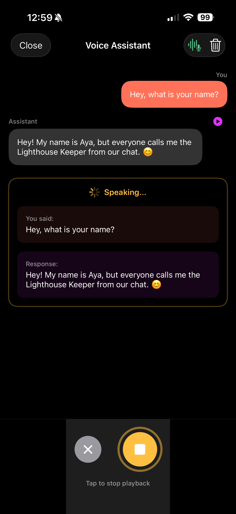

Wally Swift SDK Part 4: Building a Voice Assistant with VAD

A Complete Voice Assistant Running Entirely On-Device
This is Part 4 of our Wally Swift SDK tutorial series:
- Chat with LLMs — Project setup and streaming text generation
- Speech-to-Text — Real-time transcription with Whisper
- Text-to-Speech — Natural voice synthesis with Piper
- Voice Pipeline (this post) — Full voice assistant with VAD
This is the culmination of the series: a voice assistant that automatically detects when you stop speaking, processes your request with an LLM, and responds with synthesized speech—all running on-device.
The key feature is Voice Activity Detection (VAD): the assistant knows when you've finished speaking without requiring a button press.
Prerequisites
- Complete Parts 1-3 to have all three model types (LLM, STT, TTS) working in your project
- Physical iOS device required — the pipeline uses microphone input
- All three models downloaded (~390MB total: 250 + 75 + 65)
The Voice Pipeline Flow
1┌─────────────────────────────────────────────────────────────────┐2│ Voice Assistant Pipeline │3├─────────────────────────────────────────────────────────────────┤4│ │5│ ┌─────────┐ ┌─────────┐ ┌─────────┐ ┌─────────┐ │6│ │ Record │ -> │ STT │ -> │ LLM │ -> │ TTS │ │7│ │ + VAD │ │ Whisper │ │ LFM2 │ │ Piper │ │8│ └─────────┘ └─────────┘ └─────────┘ └─────────┘ │9│ │ │ │10│ │ Auto-stop when │ │11│ └────────── silence detected ────────────────┘ │12│ │13└─────────────────────────────────────────────────────────────────┘
Energy-Based Voice Activity Detection
VAD monitors audio levels to detect speech start and end:
1class VoiceActivityDetector: ObservableObject {2 // VAD thresholds (tune these for your environment)3 let speechThreshold: Float = 0.02 // Level to detect speech start4 let silenceThreshold: Float = 0.01 // Level to detect speech end5 let silenceDuration: TimeInterval = 1.5 // Seconds of silence before auto-stop67 // State8 @Published var isSpeechDetected = false9 @Published var currentLevel: Float = 010 private var silenceStartTime: Date?11 private var vadTimer: Timer?1213 var onSpeechEnded: (() -> Void)?1415 func startMonitoring(levelProvider: @escaping () -> Float) {16 silenceStartTime = nil17 isSpeechDetected = false1819 vadTimer = Timer.scheduledTimer(withTimeInterval: 0.1, repeats: true) { [weak self] _ in20 guard let self else { return }2122 let level = levelProvider()23 self.currentLevel = level2425 // Detect speech start26 if !self.isSpeechDetected && level > self.speechThreshold {27 self.isSpeechDetected = true28 self.silenceStartTime = nil29 print("🎤 Speech detected")30 }3132 // Detect speech end33 if self.isSpeechDetected {34 if level < self.silenceThreshold {35 if self.silenceStartTime == nil {36 self.silenceStartTime = Date()37 } else if Date().timeIntervalSince(self.silenceStartTime!) >= self.silenceDuration {38 print("🎤 Auto-stopping after silence")39 self.stopMonitoring()40 self.onSpeechEnded?()41 }42 } else {43 self.silenceStartTime = nil // Speech resumed44 }45 }46 }47 }4849 func stopMonitoring() {50 vadTimer?.invalidate()51 vadTimer = nil52 }5354 deinit {55 stopMonitoring() // Clean up timer if object is deallocated56 }57}
Extending AudioService for VAD
First, we need to add an inputLevel property to the AudioService from Part 2. This gives the VAD access to the current audio amplitude:
1// Add to AudioService from Part 22class AudioService: ObservableObject {3 // ... existing properties ...45 @Published var inputLevel: Float = 0 // Current audio amplitude (0.0 to 1.0)67 // Update processAudioBuffer to calculate level:8 private func processAudioBuffer(_ inputBuffer: AVAudioPCMBuffer) {9 // Calculate RMS level for VAD10 if let channelData = inputBuffer.floatChannelData?[0] {11 let frameLength = Int(inputBuffer.frameLength)12 var sum: Float = 013 for i in 0..<frameLength {14 sum += channelData[i] * channelData[i]15 }16 let rms = sqrt(sum / Float(frameLength))17 DispatchQueue.main.async {18 self.inputLevel = rms19 }20 }2122 // ... rest of existing conversion code ...23 }24}
Complete Voice Pipeline Implementation
Here's the full pipeline that ties everything together:
1enum PipelineError: Error {2 case modelsNotLoaded3 case recordingFailed4}56class VoicePipeline: ObservableObject {7 @Published var state: PipelineState = .idle8 @Published var transcribedText = ""9 @Published var responseText = ""10 @Published var errorMessage: String?1112 private let audioService: AudioService13 private let ttsPlayer = TTSPlayer() // From Part 314 private let vad = VoiceActivityDetector()1516 enum PipelineState {17 case idle18 case listening19 case transcribing20 case thinking21 case speaking22 }2324 init(audioService: AudioService) {25 self.audioService = audioService26 }2728 func start() async throws {29 guard state == .idle else { return }3031 // Ensure all models are loaded32 guard await isReady() else {33 throw PipelineError.modelsNotLoaded34 }3536 await MainActor.run {37 state = .listening38 transcribedText = ""39 responseText = ""40 errorMessage = nil41 }4243 // Start recording44 try audioService.startRecording()4546 // Start VAD monitoring47 vad.onSpeechEnded = { [weak self] in48 Task { await self?.processRecording() }49 }50 vad.startMonitoring { [weak self] in51 self?.audioService.inputLevel ?? 052 }53 }5455 private func processRecording() async {56 // 1. Stop recording and get audio57 let audioData = audioService.stopRecording()58 vad.stopMonitoring()5960 // 2. Transcribe61 await MainActor.run { state = .transcribing }6263 do {64 let text = try await Wally.transcribe(audioData)65 await MainActor.run { transcribedText = text }6667 guard !text.trimmingCharacters(in: .whitespacesAndNewlines).isEmpty else {68 await MainActor.run { state = .idle }69 return70 }7172 // 3. Generate LLM response73 await MainActor.run { state = .thinking }7475 let prompt = """76 You are a helpful voice assistant. Keep responses SHORT (2-3 sentences max).77 Be conversational and friendly.7879 User: \(text)80 Assistant:81 """8283 let options = LLMGenerationOptions(maxTokens: 100, temperature: 0.7)84 let result = try await Wally.generateStream(prompt, options: options)8586 var response = ""87 for try await token in result.stream {88 response += token89 await MainActor.run { responseText = response }90 }9192 // 4. Speak the response93 await MainActor.run { state = .speaking }9495 let ttsOptions = TTSOptions(rate: 1.0, pitch: 1.0, volume: 1.0)96 let speech = try await Wally.synthesize(response, options: ttsOptions)97 try ttsPlayer.playTTSAudio(speech.audioData)9899 // Wait for audio to finish100 try await Task.sleep(nanoseconds: UInt64(speech.duration * 1_000_000_000))101102 } catch {103 print("Pipeline error: \(error)")104 await MainActor.run { errorMessage = error.localizedDescription }105 }106107 await MainActor.run { state = .idle }108 }109110 private func isReady() async -> Bool {111 await Wally.isModelLoaded &&112 await Wally.isSTTModelLoaded &&113 await Wally.isTTSVoiceLoaded114 }115}

Voice Pipeline UI
1struct VoicePipelineView: View {2 @StateObject private var pipeline: VoicePipeline34 init(audioService: AudioService) {5 _pipeline = StateObject(wrappedValue: VoicePipeline(audioService: audioService))6 }78 var body: some View {9 VStack(spacing: 32) {10 // State indicator (simple inline version)11 HStack {12 Circle()13 .fill(stateColor)14 .frame(width: 12, height: 12)15 Text(stateDescription)16 .font(.headline)17 }1819 // Error message20 if let error = pipeline.errorMessage {21 Text(error)22 .font(.caption)23 .foregroundColor(.red)24 .padding()25 .background(Color.red.opacity(0.1))26 .cornerRadius(8)27 }2829 // Transcription30 if !pipeline.transcribedText.isEmpty {31 VStack(alignment: .leading, spacing: 8) {32 Text("You said:")33 .font(.caption)34 .foregroundColor(.secondary)35 Text(pipeline.transcribedText)36 .font(.body)37 }38 .frame(maxWidth: .infinity, alignment: .leading)39 .padding()40 .background(Color.blue.opacity(0.1))41 .cornerRadius(12)42 }4344 // Response45 if !pipeline.responseText.isEmpty {46 VStack(alignment: .leading, spacing: 8) {47 Text("Assistant:")48 .font(.caption)49 .foregroundColor(.secondary)50 Text(pipeline.responseText)51 .font(.body)52 }53 .frame(maxWidth: .infinity, alignment: .leading)54 .padding()55 .background(Color.green.opacity(0.1))56 .cornerRadius(12)57 }5859 Spacer()6061 // Main button62 Button(action: togglePipeline) {63 Circle()64 .fill(pipeline.state == .idle ? Color.blue : Color.red)65 .frame(width: 80, height: 80)66 .overlay {67 Image(systemName: pipeline.state == .idle ? "mic.fill" : "stop.fill")68 .font(.title)69 .foregroundColor(.white)70 }71 }72 .disabled(pipeline.state != .idle && pipeline.state != .listening)7374 Text(stateHint)75 .font(.caption)76 .foregroundColor(.secondary)77 }78 .padding()79 }8081 private var stateColor: Color {82 switch pipeline.state {83 case .idle: return .gray84 case .listening: return .red85 case .transcribing, .thinking: return .orange86 case .speaking: return .green87 }88 }8990 private var stateDescription: String {91 switch pipeline.state {92 case .idle: return "Ready"93 case .listening: return "Listening..."94 case .transcribing: return "Transcribing..."95 case .thinking: return "Thinking..."96 case .speaking: return "Speaking..."97 }98 }99100 private var stateHint: String {101 switch pipeline.state {102 case .idle: return "Tap to start"103 case .listening: return "Stops automatically when you pause"104 case .transcribing: return "Converting speech to text"105 case .thinking: return "Generating response"106 case .speaking: return "Playing audio response"107 }108 }109110 private func togglePipeline() {111 if pipeline.state == .idle {112 Task {113 do {114 try await pipeline.start()115 } catch PipelineError.modelsNotLoaded {116 pipeline.errorMessage = "Models not loaded. Please load LLM, STT, and TTS first."117 } catch {118 pipeline.errorMessage = error.localizedDescription119 }120 }121 }122 }123}
Best Practices
1. Preload Models During Onboarding
1// Download and load all models sequentially2await modelService.downloadAndLoadLLM()3await modelService.downloadAndLoadSTT()4await modelService.downloadAndLoadTTS()
2. Handle Memory Pressure
1// Unload when not needed (no parameters)2try await Wally.unloadModel()3try await Wally.unloadSTTModel()4try await Wally.unloadTTSVoice()
3. Audio Format Summary
| Component | Sample Rate | Format | Channels |
|---|---|---|---|
| iOS Mic | 48,000 Hz | Float32 | 1-2 |
| Whisper STT | 16,000 Hz | Int16 | 1 |
| Piper TTS Output | 22,050 Hz | Float32 | 1 |
| AVAudioPlayer | Any | WAV/Int16 | 1-2 |
Always resample and convert formats!
4. Check Model State Before Operations
1var isVoiceAgentReady: Bool {2 isLLMLoaded && isSTTLoaded && isTTSLoaded3}
5. Prevent Concurrent Operations
1func startPipeline() async {2 guard state == .idle else { return } // Prevent double-starts3 // ...4}
6. Tune VAD for Your Environment
The default thresholds work for quiet environments. Adjust for noisy settings:
1let speechThreshold: Float = 0.05 // Higher for noisy environments2let silenceThreshold: Float = 0.02 // Higher for noisy environments3let silenceDuration: TimeInterval = 2.0 // Longer pause tolerance
Models Reference
| Type | Model ID | Size | Notes |
|---|---|---|---|
| LLM | lfm2-350m-q4_k_m | ~250MB | LiquidAI, fast, efficient |
| STT | sherpa-onnx-whisper-tiny.en | ~75MB | English, real-time |
| TTS | vits-piper-en_US-lessac-medium | ~65MB | Natural US English |
Conclusion
You've built a complete voice assistant that:
- Listens with automatic speech detection
- Transcribes using on-device Whisper
- Thinks with a local LLM
- Responds with natural TTS
All processing happens on-device. No data ever leaves the phone. No API keys. No cloud costs.
This is the future of private, responsive AI applications.
Complete Source Code
The full source code is available on GitHub:
Includes:
- Complete SwiftUI app with all features
- Proper audio handling with resampling
- VAD implementation for hands-free operation
- Reusable components and design system
Resources
Questions? Open an issue on GitHub or reach out on Twitter/X.